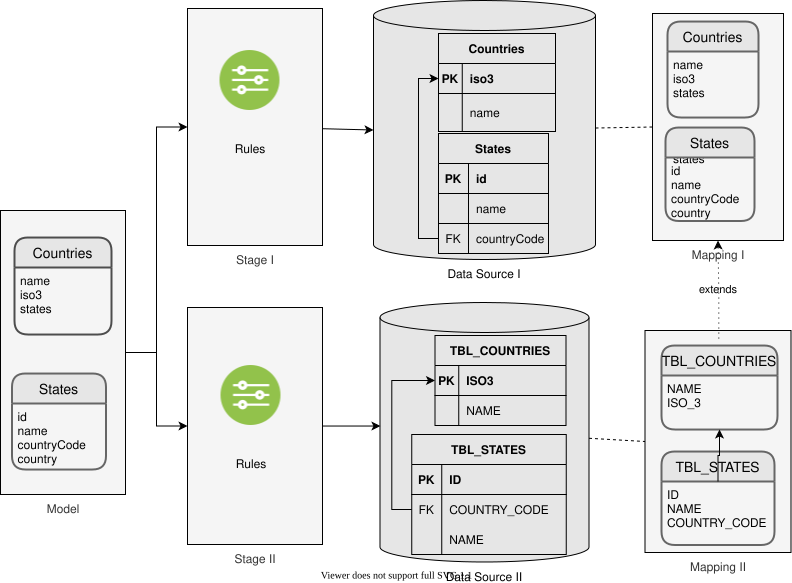

Mehrere Stages
Diese Seite zeigt ein Schema mit zwei Stages: dasselbe Modell, gespeichert in zwei verschiedenen Datenbanken.
Ein Stage ist ein Nutzungsszenario. Mehrere Stages können aus verschiedenen Gründen definiert werden, zum Beispiel:
- Um dasselbe Geschäftsmodell auf Oracle und auf SQL Server auszuführen und ihre Performance zu vergleichen.
- Um einen Stage als Ursprung und einen anderen als Ziel einer Datenmigration zu verwenden.
- Um einen Stage für Lesevorgänge und einen anderen für Schreibvorgänge zu verwenden.
- Um einen Stage für die Entwicklungsumgebung und einen anderen für die QA-Umgebung zu verwenden.
Schema-Beispiel
In diesem Schema verwendet stage1 eine MySQL-Datenbank mit den Standardnamen (mapping1 ist leer), und stage2 verwendet eine PostgreSQL-Datenbank, deren Tabellen und Spalten andere Namen haben (mapping2).
Dieselbe Abfrage liefert auf beiden Stages dasselbe Ergebnis.

domain:
entities:
- name: Countries
primaryKey: ["iso3"]
uniqueKey: ["name"]
properties:
- name: name
required: true
- name: iso3
length: 3
required: true
relations:
- name: states
type: manyToOne
composite: true
from: iso3
entity: States
to: countryCode
- name: States
primaryKey: ["id"]
uniqueKey: ["countryCode", "name"]
properties:
- name: id
type: integer
required: true
- name: name
required: true
- name: countryCode
required: true
length: 3
relations:
- name: country
from: countryCode
entity: Countries
to: iso3
infrastructure:
mappings:
- name: mapping1
- name: mapping2
entities:
- name: Countries
mapping: TBL_COUNTRIES
properties:
- name: iso3
mapping: ISO3
- name: name
mapping: NAME
- name: States
mapping: TBL_STATES
properties:
- name: id
mapping: ID
- name: name
mapping: NAME
- name: countryCode
mapping: COUNTRY_CODE
sources:
- name: source1
dialect: MySQL
mapping: mapping1
connection: $CNN_MYSQL
- name: source2
dialect: PostgreSQL
mapping: mapping2
connection: $CNN_POSTGRES
stages:
- name: stage1
sources:
- name: source1
- name: stage2
sources:
- name: source2
Umgebungsvariablen:
CNN_MYSQL={"host":"localhost","port":3306,"user":"test","password":"test","database":"test"}
CNN_POSTGRES={"host":"0.0.0.0","port":5433,"user":"test","password":"test","database":"test"}